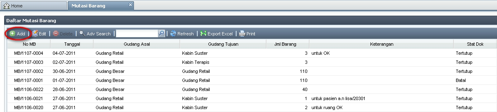

MB Baru
Langkah-langkah untuk membuat MB baru:
- Klik Add.

- Pada form pengisian Mutasi Barang baru:
- Pilih Tanggal (default adalah hari ini)
- No MB tidak perlu diinputkan, karena akan otomatis terinput
- Pilih Gudang Asal dan Gudang Tujuan
- Isi Keterangan jika diperlukan
- pada tab Item Mutasi:
- klik Add
- pilih / ketik Produk yang sesuai
- pilih Satuan yang sesuai
- isi Jumlah
- klik Update
- Klik Save and Print
Note:
- Proses Save and Print akan mengubah Status Dok MB menjadi "Tunggu", yang berarti stok di masing-masing Gudang belum berubah.
- User di Gudang Tujuan wajib menerima MB yang baru dibuat ini, supaya stok di masing-masing Gudang berubah. (untuk menerima MB dapat dilihat di MIS User Manual --> Persediaan --> Mutasi Barang --> Terima MB, atau klik disini)
- Hanya MB dengan Status Dok "Tertutup" yang akan memengaruhi stok.
- untuk lebih jelas mengenai Alur MB dapat dilihat di MIS User Manual --> Persediaan --> Mutasi Barang --> MB Biasa --> Alur SMB dan MB, atau klik disini.
Copyright © 2010, IT Department of Miracle Aesthetic Clinic Group
Created with the Freeware Edition of HelpNDoc: Free Web Help generator